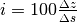

5. Diseño altimétrico¶
En la actualidad, las carreteras se construyen de forma que su perfil longitudinal está formado por tramos de pendiente (inclinación) constante enlazados por otros en los que la pendiente (inclinación) varía de manera lineal. Los tramos de pendiente constante se denominan «rampas», cuando la inclinación es positiva según el sentido de recorrido, y «pendientes», cuando la inclinación es negativa.
Los tramos con variación lineal de la pendiente se denominan «acuerdos parabólicos», por ser una parábola la curva a que dan lugar en el perfil longitudinal. En castellano se da la coincidencia de que recibe la misma denominación la pendiente trigonométrica de una función que las alineaciones del perfil longitudinal con inclinación constante negativa.
Se denomina rasante al conjunto de segmentos, rectos o curvos, que definen el trazado en alzado de una carretera. La definición de rasante es bidimensional: relaciona la distancia s recorrida a lo largo del trazado en planta, (desde un origen de las distancias), con la cota z (referida a un plano de comparación). El plano de referencia respecto del que se miden las cotas, se suele elegir de manera que no aparezcan valores negativos.
En el gráfico correspondiente al perfil longitudinal de una carretera, las rampas están representadas por rectas de inclinación positiva, las pendientes están representadas por rectas de inclinación negativa y los acuerdos parabólicos están representados por parábolas de segundo grado y eje vertical que conectan las rampas y pendientes entre sí. Los acuerdos parabólicos pueden ser cóncavos, cuando la pendiente crece en el sentido de avance de las abscisas s , o convexos cuando la pendiente es decreciente.
La expresión general de un tramo de inclinación constante del perfil longitudinal, rampa o pendiente, es la siguiente:
En la expresión anterios, z es la cota o altitud del punto, s es la distancia recorrida a lo largo del eje de la carretera a partir del origen del tramo considerado y ( , son los parámetros que caracterizan geométricamente la recta.
Los acuerdos parabólicos son parábolas de segundo grado y eje vertical. Su expresión general en el perfil longitudinal es la siguiente:
En esta expresión, z es la cota o altitud del punto, s es la distancia recorrida a lo largo del eje de la carretera a partir del origen del tramo considerado y ( , son los parámetros que definen geométricamente la parábola.
La inclinación de una rasante se mide por la tangente del ángulo que la recta tengente a ella forma con la horizontal, expresado en porcentaje:

Los valores positivos de i corresponden a las rampas (se sube en el sentido positivo del avance); los valores negativos corresponden a las pendientes (se baja en el sentido del avance).
5.1. Inclinación mínima y máxima¶
Para evitar problemas de desagüe superficial de la plataforma, la inclinación de la línea de máxima pendiente no debería ser inferior al 0.5 %.
Los tramos con inclinación muy pronunciada tampoco son deseables. En el caso de las rampas, la velocidad de los camiones disminuye mucho, el consumo de combustible de todos los vehículos aumenta y la emisión de gases también aumenta, lo que puede dificultar la ventilación en túneles. En el caso de las pendientes, los vehículos se pueden acelerar peligrosamente, siendo necesaria la utilización de los frenos, que podrían sobrecalentarse.
La elección de la pendiente máxima siempre supone un compromiso entre los costes de construcción con los de explotación. Las normas suelen fijar un valor máximo para la inclinación en función del tipo de carretera y las características del terreno que atraviesa. En todos los casos se permite que dichos límites sean rebasados si la rasante es corta o en carreteras convencionales que discurran por un terreno muy accidentado y con baja intensidad de circulación.
En el caso de rampas pronunciadas y de gran longitud, es habitual disponer carriles adicionales para vehículos lentos, de manera que no se reduzca el novel de servicio.
La norma de trazado española fija un límite máximo del 4 % en autovías y autopistas, tanto para rampas como para pendientes. En el caso de las carreteras convencionales, las inclinaciones máximas, en función de la velocidad de proyecto de la carretera, son las que aparecen en el siguiente cuadro:
{kind=link}
5.2. Acuerdos verticales¶
Entre dos rasantes uniformes con distinta inclinación hay que disponer un acuerdo vertical, que proporcione un cambio gradual de la pendiente. Se utilizan parábolas, que proporcionan un cambio lineal entre la inclinación inicial, correspondiente a la rasante uniforme de entrada al acuerdo, y la inclinacion final, correspondiente a la rasante de salida del mismo.
La expresión general de una parábola de eje vertical es la que se ha indicado anteriormente. Se suele utilizar el concepto de parámetro del acuerdo, Kv, con la siguiente expresión:
El parámetro Kv tiene las dimensiones de una longitud; si es positivo, corresponde a un acuerdo cóncavo (le inclinación aumenta en el sentido de avance) y, si es negativo, corresponde a un acuerdo convexo (la inclinación disminuye en el sentido de avance). Los valores absolutos altos de Kv corresponden a acuerdos más tendidos, mientras que los valores menores corresponden a acuerdos más aguzados.
El punto común entre la rasante de entrada y el acuerdo se denomina tangente de entrada, y se representa por . La inclinación de la carretera en ese punto es . El punto comun entre la rasante de salida y el acuerdo se denomina tangente de salida, y se representa por  . La inclinación de la calzada en ese punto es
. La inclinación de la calzada en ese punto es
Se denomina Longitud del acuerdo, L la distancia horizontal entre la tangente de entrada y la tangente de salida:
La longitud del acuerdo, L, la variación de inclinación en tanto por ciento y el parámetro Kv están relacionados por la siguiente expresión:
La siguiente figura muestra los diferentes parámetros comentados:
{kind=link}
5.3. Dimensiones mínimas de los acuerdos¶
A igualdad de la diferencia de inclinaciones entre la rasante de entrada y la de salida, el acuerdo se recorre on mayor comodidad cuanto mayor sea su longitud y cuanto mayor sea el valor del parámetro Kv. Las normas fijan unas dimensiones mínimas, teniendo además en cuenta criterios de visibilidad. Las dimensiones mínimas de los acuerdos verticales, atendiendo al tipo de carretera, se aconseja que sean las siguientes:
{kind=link}